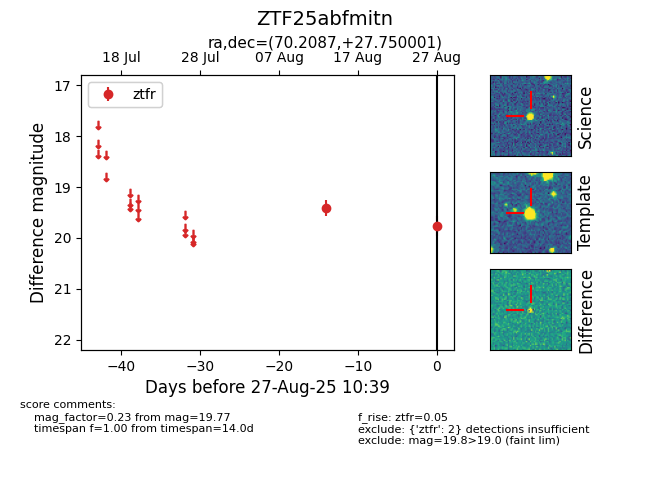

Target ZTF25abfmitn at 2025-08-27 10:39, see:
FINK: fink-portal.org/ZTF25abfmitn
Lasair: lasair-ztf.lsst.ac.uk/objects/ZTF25abfmitn
ALeRCE: alerce.online/object/ZTF25abfmitn
alt names
ZTF25abfmitn (ztf,fink)
coordinates:
equatorial (ra, dec) = (70.2087,+27.75000)
galactic (l, b) = (172.6236,-12.27631)
photometry
last ztfr=19.77
2 ztfr detections
